Awards
Awards by Category
Certificates
- Fermat Mathematics Contest- Certificate of Distinction & highest in school2026-27
- Pascal Mathematics Contest- Certificate of Distinction & highest in school2024-25
- Gauss Mathematic Contest- Certificate of Distinction2021-22
- Award Of Excellence - English language & Literature2025-26
- Award Of Excellence - Mathematics AA HL2025-26
- Certificate of Distinction IGCSE2023-25
- Award Of Excellence - Physics2023-25
- Award Of Excellence - History2023-25
- Award Of Excellence - First Language English2023-25
- Award Of Excellence - Spanish2023-25
- Award Of Excellence - Physics2023-24
- Award Of Excellence - English Literature2023-24
- Certificate of Excellence for A* and A in all Subjects2023-25
- Consistent Academic Achievement Award2022-23
- Outstanding Sportsperson of the year (Swimming)2024-25
- John Locke Commendation Award2026
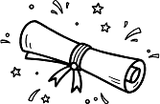
- Published in IJHSR- Research paper on microplastic removal from water2026
- Published in OJSS- Research paper on Lead removal from water2026
- Imperial College London STEM-a-thon – National and International winner2025
- Gold Crest Award - Smart Irrigation2025
- Blue Ocean Competition - Top 2502025
- Urja-School Science Fair- 1st Position2024-25
- Urja-School Science Fair- Organising Committee2026
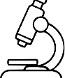
- SRCC Nationals : 1st Prize out of 200+ participants2024
- ISDS National Camp : Top 30 among 2000+ participants2022 & 2023
- ISDS Iron Person Triathlon : Top 20 out of 1000 participants2023
- Yale Invitational : Top 10 Speaker2023
- Intertext Pre-WSDC: 5th Best Team2023
- Doxbridge : Quarterfinalist2023
- Transpacific WSC U16 : Finalist2023
- Asia School Open : Top 10 Speaker in South/Southwest Asia2022
- Indian Debating League : Champions; 3rd Best Speaker2022
- National Champions League : Finalist2023
- WSDL: Quarterfinalist2024
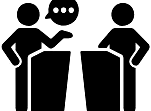
- ISSO National Swimming Championship- 2 Gold medals and 1 Silver medal2024
- Asia Open Schools Invitational, Bangkok- ranked 12th in 100m Breaststroke2024
- Delhi State Championship - 4th in 50m Breaststroke2023
- CBSE zonal -silver in freestyle 100m2023
- CBSE Nationals- Participant2023
- Multiple medals in 10+ interschool swim meets1999-present
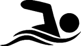
- FTC - India National Championship- Runner- up Innovate Award2023-24
- FLL - Qualified for National Champioship2021-22
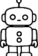
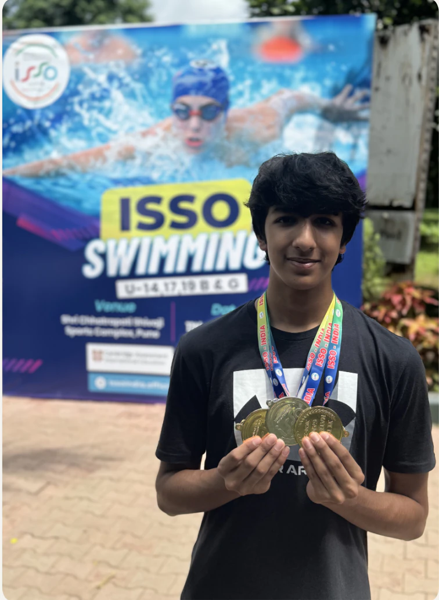
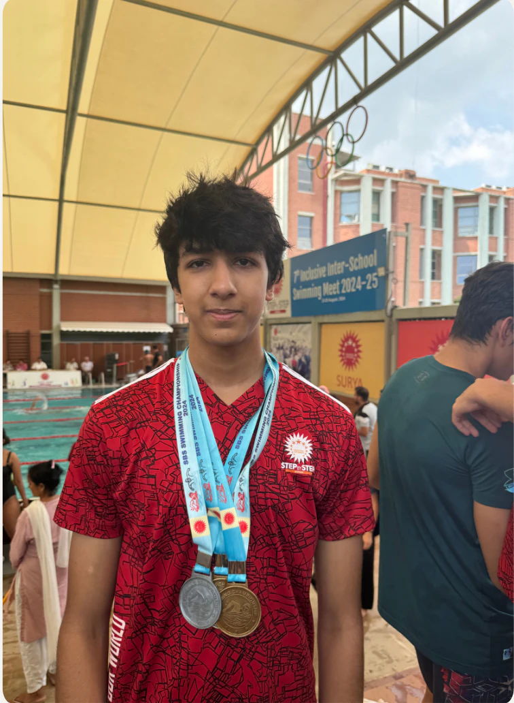
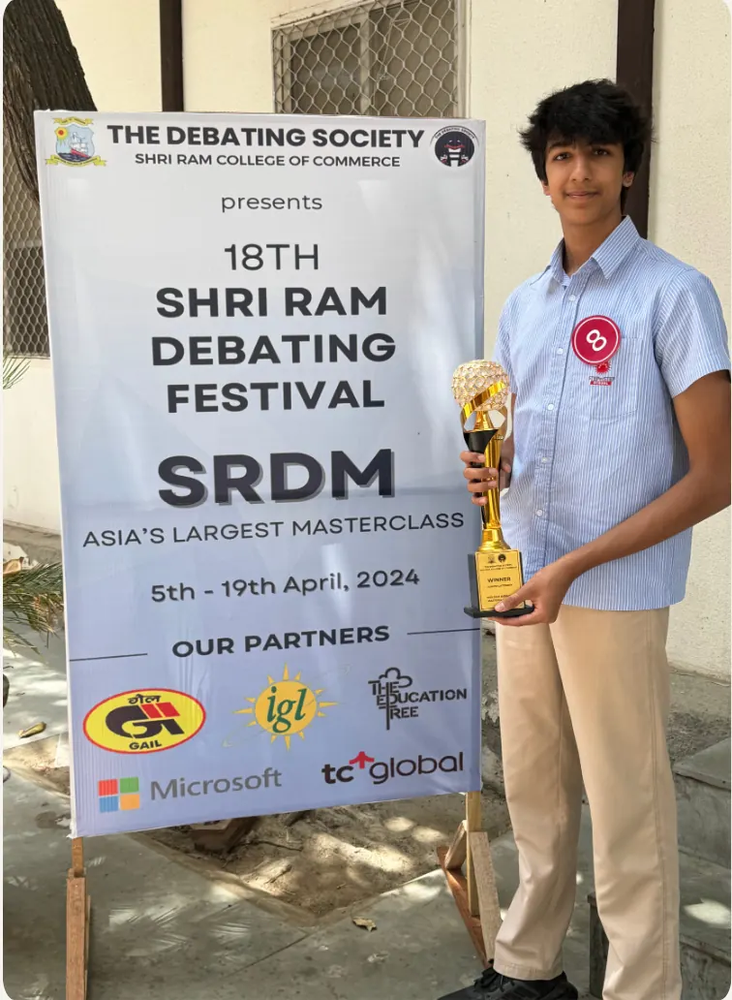
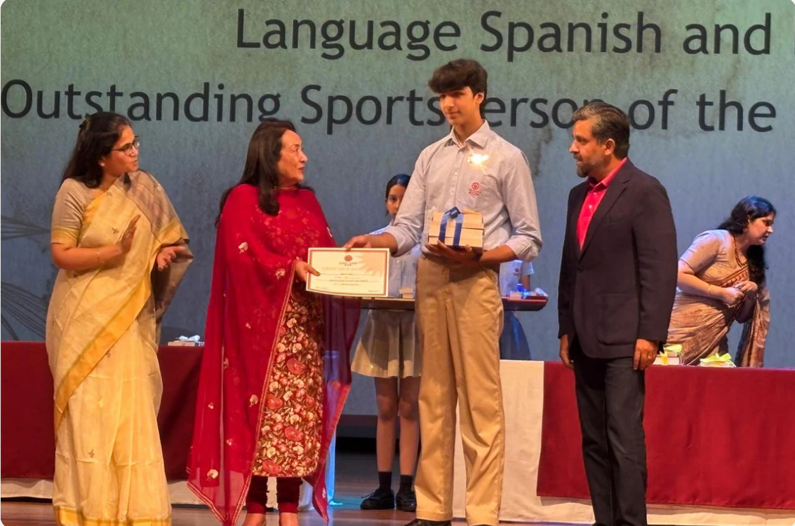
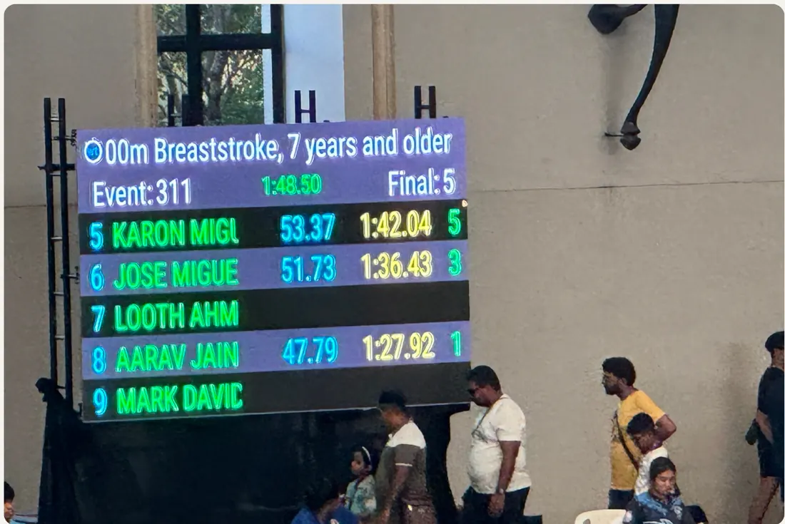
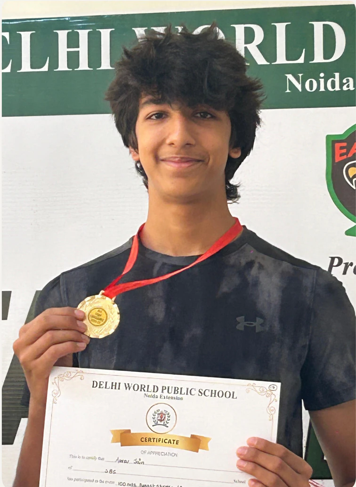
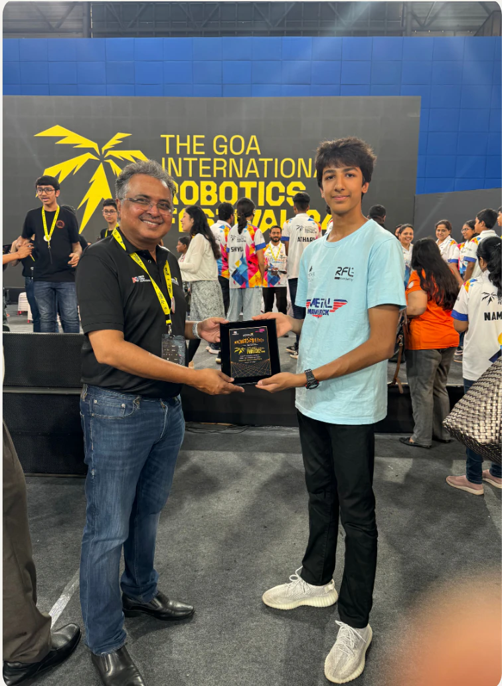
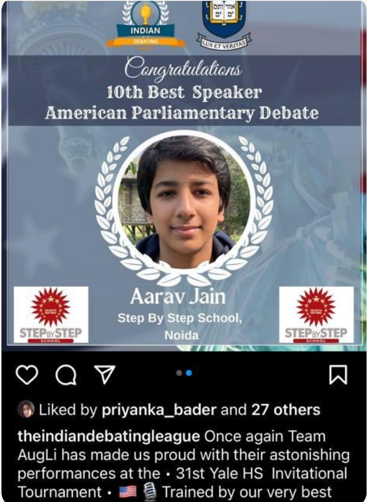
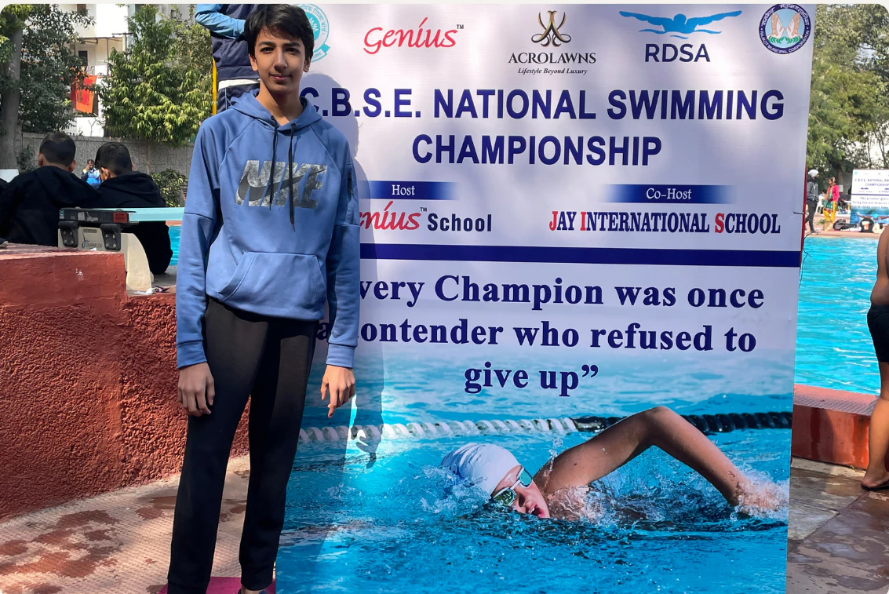
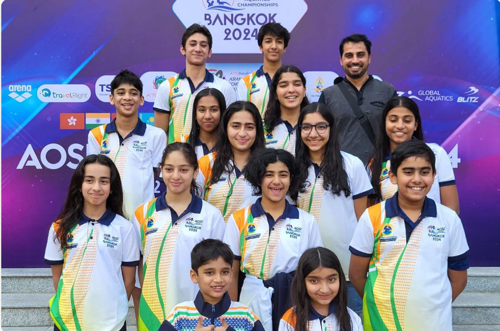
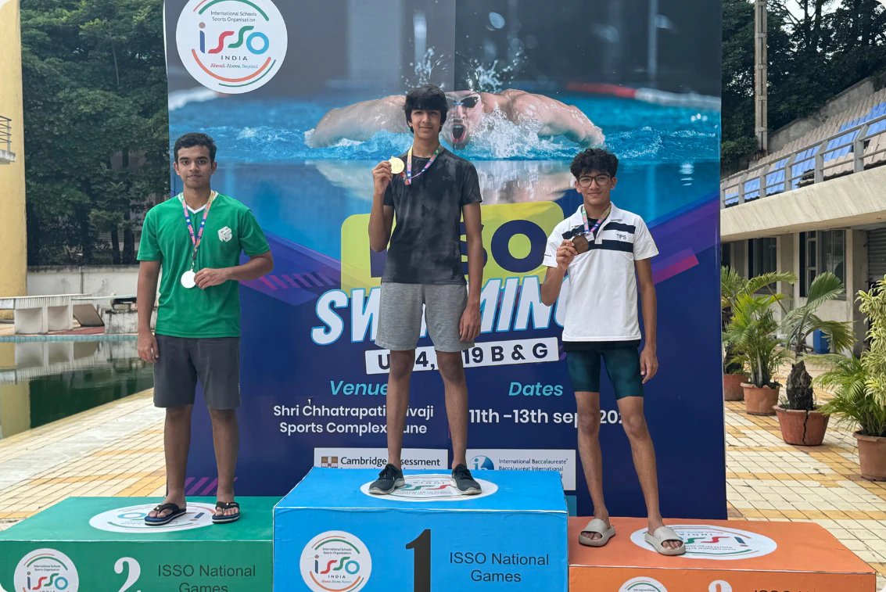
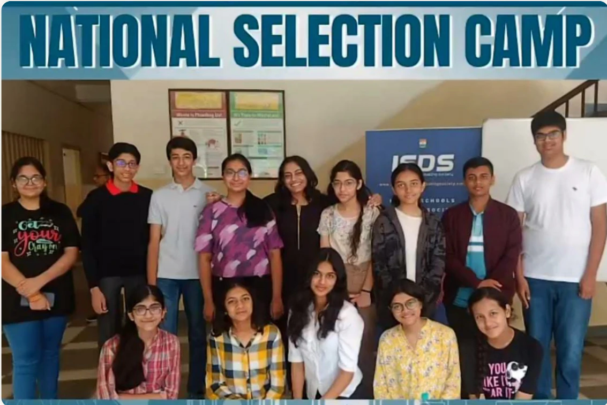
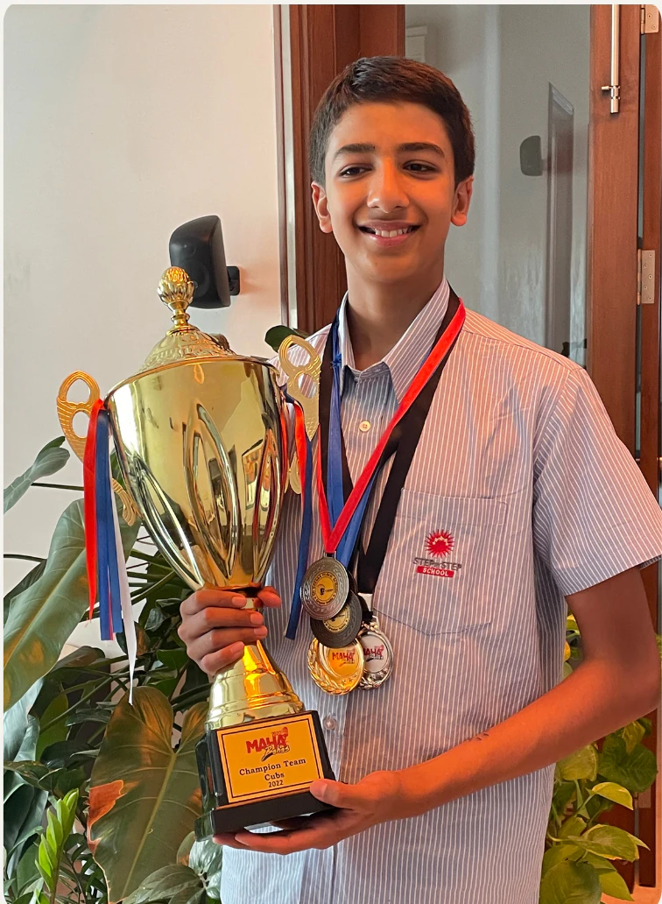
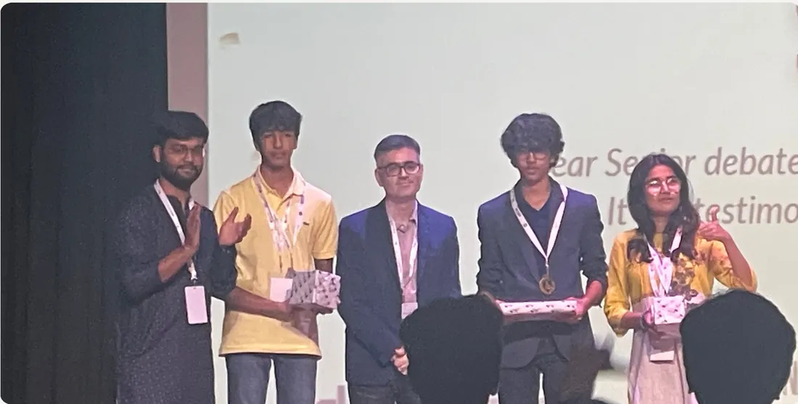